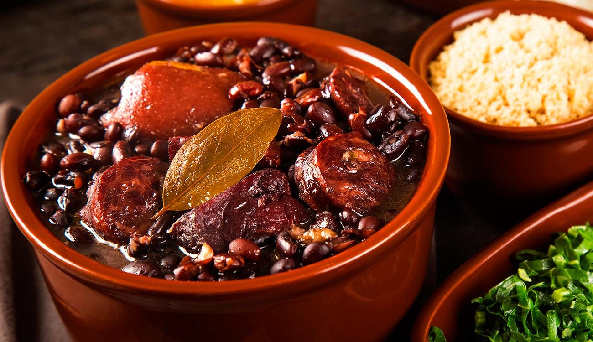

Feijoada

INGREDIENTES (20 porções)
1 Kg de feijão preto
100 g de carne seca
70 g de orelha de porco
100 g de costelinha de porco
50 g de lombo de porco
100 g de paio
150 g de lingüiça portuguesa
TEMPERO
2 cebolas grandes picadinhas
1 maço de cebolinha verde picadinha
3 folhas de louro
6 dentes de alho
Pimenta do reino a gosto
1 ou 2 laranjas
40 ml de de pinga
MODE DE PREPARO(02:20min)
1° Coloque as carnes de molho por 36 horas ou mais, vá trocando a água várias vezes, se for ambiente quente ou verão, coloque gelo por cima ou em camadas frias.
2° Coloque para cozinhar passo a passo: as carnes duras, em seguida as carnes moles.
3° Quando estiver mole coloque o feijão, e retire as carnes.
4° Finalmente tempere o feijão.